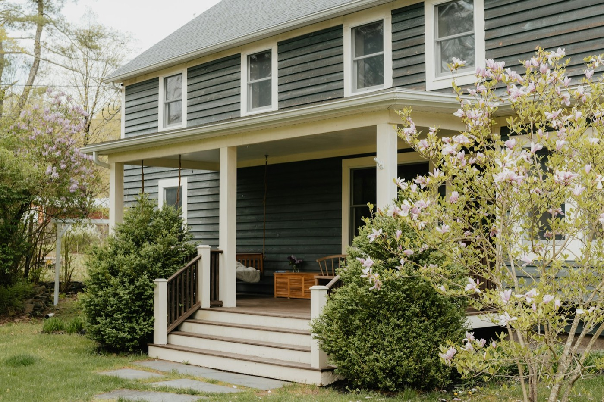

A volunteer pushing a trolley along a hospital corridor
A volunteer pushing a trolley along a hospital corridorWho it is for
For the first weeks home after a hospital or rehab stay.
Coming home is a relief and a risk. Medicines change, energy is low, the bathroom is suddenly dangerous and families are juggling work and visits.
We coordinate with the discharge team, make the home safe and start care within 72 hours of signing, with a first-week plan everyone can see.
The 72-hour start
From the first call to the first visit.
Tick each step to see how the clock fills.
Tick the steps to see the clock fill. The 72-hour start applies once a care agreement is signed and is subject to the assessment; we publish how often we meet it.
Discharge checklist
Before they leave the ward, ask for these.
- A written list of medicines, with what changed
- Follow-up appointments and who booked them
- Warning signs to watch for, and who to call
- Equipment needed: frame, shower chair, raised toilet seat
- Food in the fridge and someone to cook it
- Who will be there the first night


Home is where recovery happens.
With help in the right places, most people do better in their own bed, their own kitchen and their own routine.
First-week plan
What the first seven days look like.
| Day | What happens |
|---|---|
| Day 1 | Home safely. Bed, bathroom and kitchen checked. Medicines collected and matched against the discharge list. |
| Days 2 to 3 | Personal care, meals and fluids. Watching for warning signs the hospital told us about. |
| Day 4 | Follow-up appointment booked or attended, with notes for the family. |
| Days 5 to 7 | Gentle activity as advised, review with the care manager, hours adjusted. |
For discharge planners and clinicians
Refer in under two minutes.
Name, contact, discharge date and needs. We call back within the hour.
How we are different
Coordination, not just a visit.
We talk to the hospital
We speak to the discharge team about medicines, mobility and follow-up before day one.
Dementia-trained, every one
Every caregiver finishes our dementia training before their first visit, not 'when they get to it'.
The same small team
Two or three caregivers who know them, and a backup you meet before day one.
You can see it happen
The family app shows check-ins, care notes and a weekly summary.
Promises with numbers
Start times, replacement times and call-back times we measure and publish.
Price
From USD $34/hour
After-hospital care is usually personal care rates for a few weeks, stepping down as they recover.
Your exact price is confirmed in writing after the free assessment. No sign-up fee, no long contract.
Questions
Five questions about care after hospital.
How fast can you start?
Within 72 hours of signing, and often sooner. Call before discharge and we can plan with the hospital team.
Can the hospital refer directly?
Yes. Discharge planners, social workers and doctors can use our referral form, which takes under two minutes.
Is this short-term?
Usually 2 to 6 weeks, then we step down or stop. Some families continue with fewer hours.
What about nursing and physio?
Home health nursing and therapy ordered by a doctor may be covered by Medicare; we coordinate with those visits and do the non-medical care in between.
What if they go back into hospital?
We pause care, keep the team ready and restart when they come home.
No question matches. Call us and ask a person.
What this does not cover
- Skilled nursing, wound care, IV medicines or physiotherapy (we coordinate with those teams)
- Medical decisions about discharge; those are made by the hospital
- Transport by ambulance
Book a free assessment Call (813) 555-0142
Next step
You do not have to work this out alone.
Call (813) 555-0142 and a care advisor will listen first, then tell you plainly what we would do and what it would cost.